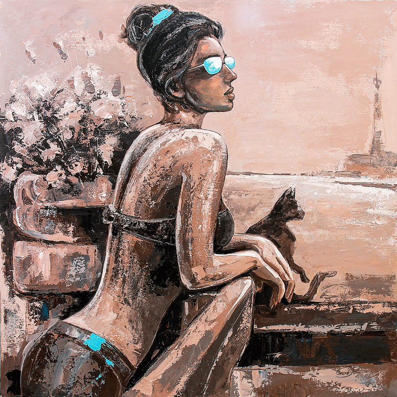

Another-day

by by Gurdish Pannu, India, 2018
Painting, Acrylic, Framed
Size 32 x 32 in
Shipping : Worldwide
Free Shipping.
$5,000
PurchaseAbout the Artist:-
As the river starts it's journey from the glaciers and passes through different mountains and finally attains salvation at the sea, my journey has also been the same.I was mere 7-8 years old when I dialogued with colors for the first time. We became friends and they promised to travel along me through out journey. Together as a team, we would paint sceneries, flowers and the beloved nature, which has always been my inspiration throughout life.
After schooling, my life took a change when I entered govt. College of fine arts at Chandigarh, the city designed by Le Corbusier. The place has been a battlefield of 'kurkshetra' for me and fine arts collage as "Krishna" where different waves of artistry enthusiased me.
The colors travelled along me and it was the time when we encountered 'live sketching'. It was tuff as it was new to me. Butterflies were in my stomach and it became more challenging when the class was exposed to women figures. Being a boy who Came from rudimentary level, it was hard to imbibe as I didn't observed any lady from that perspective; the anatomy and the built up of the torso. Though the figurative sketching of a man was quite easy for me but women figurative haunted me.
As gorge s. Patton said, "accept the challenges so that you can feel the exhilaration of victory" attaining mastery in woman figurative work became my aim and my colors became my strength. The hours I practiced at my hostel are the best part of this journey and my brushes walked along me.
My life took another change when I passed out form college and my role as caricature at different newspapers like Indian Express, The Tribune and the Daily Ajit helped me to polish my work.
After participating in hundreds of art exhibitions nationally and internationally, i pondered to put more emphasis on spending more time with canvas rather than exhibitioning. Though I loved my showes at Las Vegas and that fine evening when I painted the great Canon lively.
Now I am passing through that phase of my life where I am painting for my own satisfaction without any strings of market. I enjoy working on women figurative and live sketching. My paintings are empitome of joy and happiness. They are the fruits of my journey which is flowing like river through different mountains, trees and flowers.